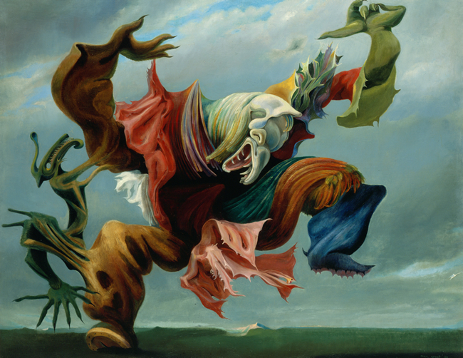
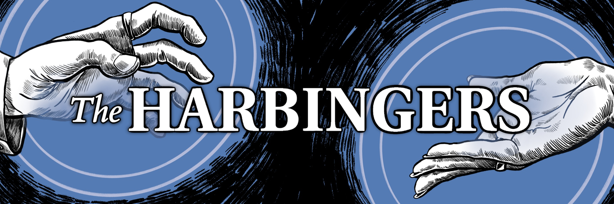

The ♦perfect♦ trip
I would see scenes like...

And animals like...

And eat food like...


According to all known laws of aviation, there is no way a bee should be able to fly.
Its wings are too small to get its fat little body off the ground.
The bee, of course, flies anyway because
bees don't care what humans think is impossible.
Out of the night that covers me,
Black as the pit from pole to pole,
I thank whatever gods may be
For my unconquerable soul.
In the fell clutch of circumstance
I have not winced nor cried aloud.
Under the bludgeonings of chance
My head is bloody, but unbowed.
Beyond this place of wrath and tears
Looms but the Horror of the shade,
And yet the menace of the years
Finds and shall find me unafraid.
It matters not how strait the gate,
How charged with punishments the scroll,
I am the master of my fate,
I am the captain of my soul.
Nobody’s born smart.
We all start at 0. Can’t talk, can’t walk, certainly can’t do algebra.
Adding, reading, writing, riding a bike.
Nobody’s good at anything at first.
There was a time when Einstein couldn’t count to 10.
And Shakespeare had to learn his ABCs just like the rest of us.
Thankfully, we are born to learn.
Slowly.
Surely.
You stumble,
slip, crawl,
fall
and fail
and
fall.
Frustrating.
Confusing.
Trying.
Struggling.
Until one day, you walk.
One foot in front of the other.
One idea on top of the next.
Each wrong answer making your brain a little bit stronger.
Failing is just another word for growing.
And you keep going.
It’s not that you don’t get it.
You just don’t get it, yet.
Because the most beautiful, complex concepts in the whole universe
are built on basic ideas that anyone, anywhere can understand.
Whoever you are, wherever you are.
You only have to know one thing:
I would see scenes like...

And animals like...
And eat food like...
Sei mir gegrüßt, Melancholie, Die mit dem leisen Feeenschritt Im Garten meiner Phantasie Zu rechter Zeit ans Herz mir tritt! Die mir den Mut wie eine junge Weide Tief an den Rand des Lebens biegt, Doch dann in meinem bittern Leide Voll Treue mir zur Seite liegt! Die mir der Wahrheit Spiegelschild, Den unbezwungnen, hält empor, Daß der Erkenntnis Träne schwillt Und bricht aus dunklem Aug hervor; Wie hebst das Haupt du streng und strenger immer, Wenn ich dich mehr und mehr vergaß Ob lärmendem Geräusch und Flimmer, Die doch an meiner Wiege saß! Wie hängt mein Herz an eitler Lust Und an der Torheit dieser Welt! Oft mehr als eines Weibes Brust Ist es von Außenwerk umstellt, Und selbst den Trost, daß ich aus eignem Streben, Was leer und nichtig ist, erkannt, Nimmst du und hast mein stolz Erheben Zu Boden allsobald gewandt, Wenn du mir lächelnd zeigst das Buch Des Königs, den ich oft verhöhnt, Aus dem es, wie von Erz ein Fluch, Daß alles eitel sei! ertönt. Und nah und ferne hör ich dann erklingen Gleich Narrenschellen ein Getön – O Göttin, laß mich dich umschlingen, Nur du, nur du bist wahr und schön! – Noch fühl ich dich so edel nicht, Wie Albrecht Dürer dich geschaut: Ein sinnend Weib, von innerm Licht Erhellt, des Fleißes schönste Braut, Umgeben reich von aller Werke Zeichen, Mit milder Trauer angetan; Sie sinnt – der Dämon muß entweichen Vor des Vollbringens reifem Plan.
The pre tag preserves both spaces and line breaks:
My Bonnie lies over the ocean. My Bonnie lies over the sea. My Bonnie lies over the ocean. Oh, bring back my Bonnie to me.
this is beautiful and i am a genius